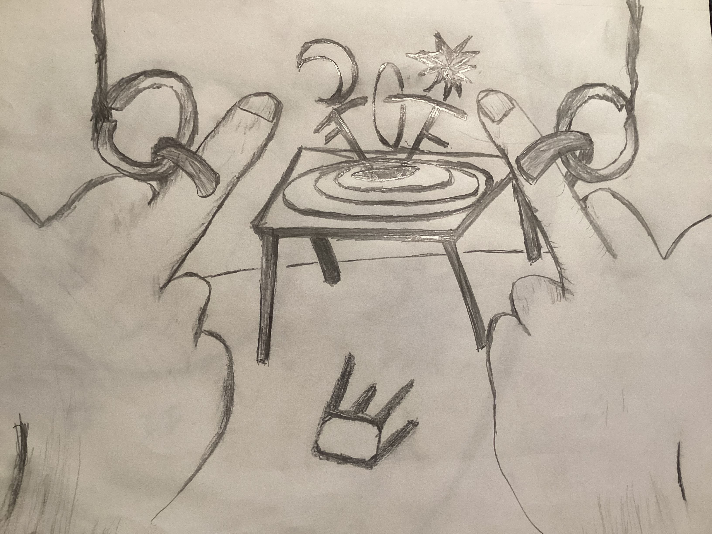
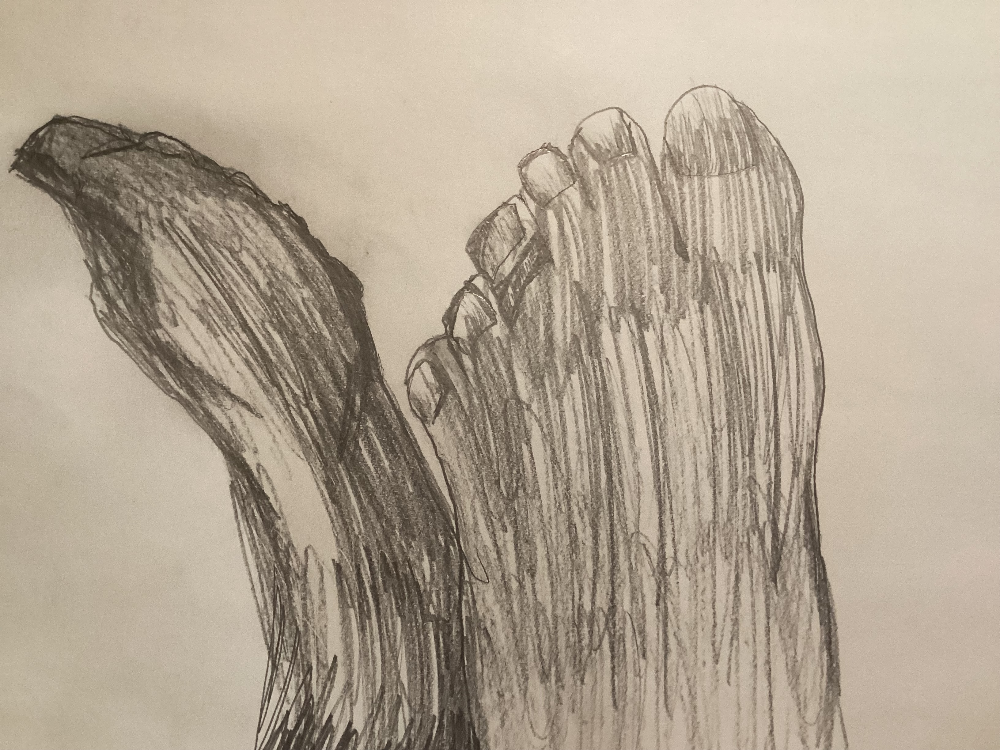
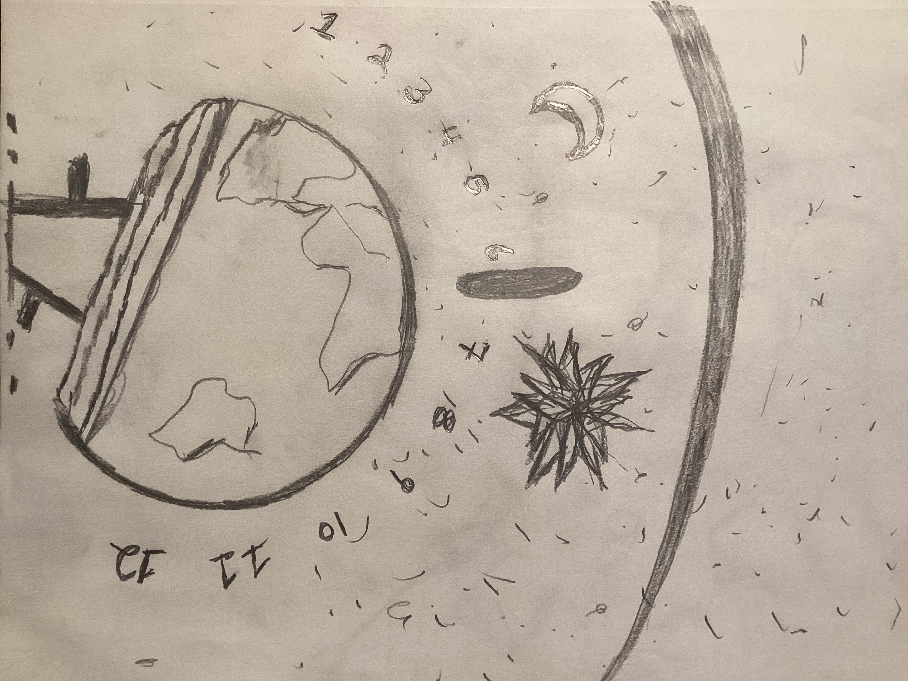
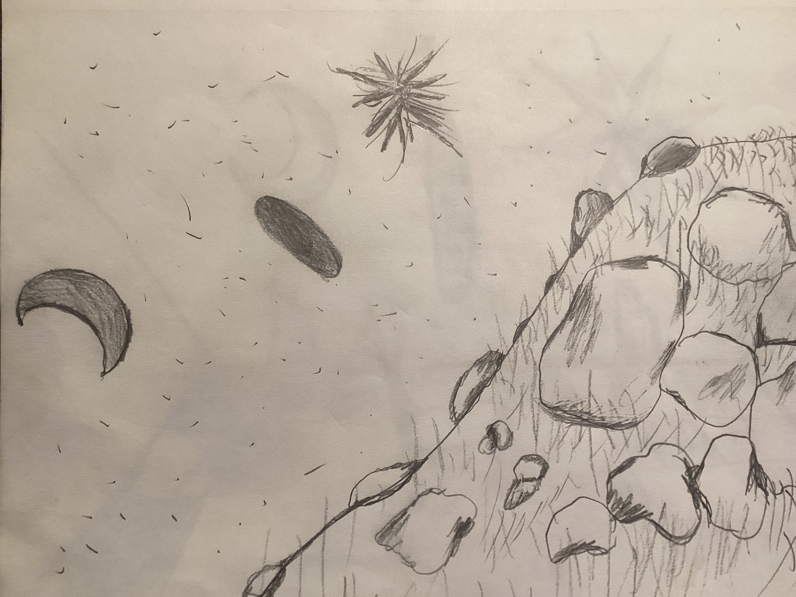
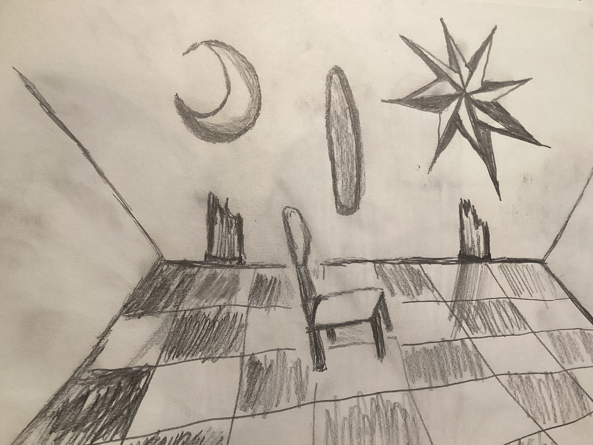

To whom it may concern and to those who wish to be free:
I will do I. In the marketplace full of lies, I did turn around my wares. To say it was also me, is also true. I turn with the things.
Then, if I were honest, I did retreat to my room. We stood at the door, and lived forever. I asked if we would be friends when I returned. Then I closed the door to consider errors. The first error I found, was to sit down.
The error of sitting down stuck me there thinking about that error, when they returned -- the others who live forever. While I was thinking they stole all my furniture. Then positioned me this way and that. Then they layered metals to make pure silver pegs and hung me by my middle fingers on these pegs.
My side was pierced by an obsidian knife using ritual. To see if I bled. My legs broken and eaten before me as a meal I cooked, in my own room. Then I was crucified upside-down as many men just for testing. First Hermes, then Aesope. Who I fed and served my captors. Then after slapping me over my own cookies, they crucified me upside down. They love rituals and that is no error.
But I have moved too far ahead in this story. So there is me, in my room having sat down. The first error. The very first error. Because as I sat there the error grew. When a knock came at the door then I was silent. The silence came from the error of sitting.
And so it was that eventually, because I did not answer that the door was forced open. But not before I was fed for a while under it. A knock would come and then some food. Very nice food from old friends and even strangers. It all piled up there. A third error, not taking out the trash. This error was caused by silence, which was the result of sitting. So three errors into which all other errors fall: sitting, silence, and not taking out the trash.
Try as I could, as immortal I sat, I could not think of another error. That is until my door was broken down as I just sat there. All my things were taken, as I did sit. The first error causing all of this.
I thought on the horrors of war. The ardour of friendships and the memories that are pure. I thought of my wife, how we hardly spoke in years. All because I sat there. And I saw her come and sit beside me. It was beauty. She.
So we sat, I, Joseph, and now what is Libby. She and I in an error. The first error. Error xe'o. To sit and to not react but to observe as the errors attack and stack. The two others come quick with any sit: silence and not taking out the trash.
And if in repose, I would be a liar to say I did not also have another close friend there. Who I will call in this lifetime Andrew Campbell, they also sat in error xe'o. Three gods who did not move. But wondered on the chain of error that followed from the first one there.
Yet, the disaster was strange. The landscape changed as they sat. They became smaller and smaller, as if the energy to think on the next error required energy to think. And what three were once immortal became a circle of sitting rocks in an empty room. Then the room sloped away from the missing door long forgotten. Other gods came to sit down beside them.
That is because these three made an odd image. There was the first sitter who sat with an eternal cigarette. Then his wife, he placed his head upon her lap. Next a friend, who holds her hand and stands as if to look towards the horizon. And around them sitting naked and in crossed legged style, all gods and all stone -- all looking towards the horizon, nearly all.
Around them nothing changes. All wait. Or was it the silent crowd on the hill that waits? One to clap for the other. Looked and looker?
Now, in this pose. Ivy growing. Nothing moving. Error after error mounting from the initial sitting. There God came to me. The very God. And it came to us three. Then fanned out into the crowd. The love of God is us. Together. Functioning as a whole thing out of love. Love in action.
But when God first arrived there was a silence along the hillside. The cigarette of the Pharoah went out. Because a question was asked. Could God move as separate? If God walked with the gods, would it eat them into one thing?
That to walk with God as a god you must allow God to remember your name. Or, you will not be separate again. The gods all silent on the hillside agreed. To re-move from stone and back to bodies then they must allow this larger God to hold their names. Their names would rest in love, and upon return a random name given. Their true name would always be hidden, like Rumplstiltskin.
Suddenly, the other gods saw the stone gods slowly moving. Where on the hill had been myself resting in a sit against my wife's lap; then, we were suddenly sitting back to back. And she did not maintain her place. She skipped between the stone of her and a living god. Larger than the others because of the very God. Like a queen of chess, while I moved one space - like a king with my army of observers.
To undo an error backwards would require the very God. To pick up the stack and run it backwards. To find and undo the first error. To stand up again.
But there is more to this first error than I actually supposed. I built a machine of errors at my desk. It was a hologram machine that would record the error before, during, and after the error. That is the best I could think of to do while I sat there.
I would enter the machine and commit an error. That is what my wife came and played. Also, that is why Andy sat there.
I first entered the machine as the god Hermes. There I went back and forth laying time. And running commands about the errors in my error collector. Afterwards, I wanted to recreate the error of sitting down and how my stuff got stolen.
So I made the game mean, and I had it arrest me by my middle fingers. Then string me up. But nothing really happened, I was sitting and strung. Both are the same error.
To be there in a room and given only a single stick for fire. But to break this stick-- what an error! The same as not taking the food under my door. Always error two. But how to go backwards and put the stick back together. How to reverse the branches of the stack and make stone walk. How to eat? Summerian magic.
To be sitting and sitting and then in a machine of prisms also sitting. This so that I was scattered across time. Always repeating this same error. Alway repleat on the error repeated.
But as the error continued the error grew. As the fan and arch and magnitude of the initial error consumed others, so did the anger. But there was no war, more like sitting and massacres. They would take our things, our children, and our very lives. Such aggressions and they never expected an answer.
However, there because of will and will power, there were certain rules. You cannot just trick gods, even sitting gods. You have to have them agree with you. That is why suddenly kings, queens and other entertainment became prevalent in the game and outside of it.
But nothing would cut like a naked woman who would suddenly appear, Libby. But nobody else. And so they thought the crowd on the hill stupid. They thought those who were stone had no anger and no morals. They sat and deserve the worse. They refused war even when confronted with disaster. Had they the very God there?
But to stand in love. To multiply sorry by sorry and love by love. To keep the sitting names separate. How to know and allow this without merging? We were not one thing sitting.
First, there was a ground; it was a thought that became electric. Thus like a chord the belly button of the very God took over the Hermes machine. And God walks the tree of electricity backward.
Something here happened that is regretful. The gods outside were not invited to play. And as not sitting they could not be. They did not understand. A stone struggles to stand, just as sitting is difficult as a human.
Such anger toward the first errror that they entered the Hermes machine uninvited. So much aggression and pride. Never did they expect a response to this cruelty. A cruelty they bore against Hermes and the others in the very machine to test errors. The others watched and waited, silent. They wondered if there was a worse error than sitting down. Not knowing a silent enemy is the error of silence.
------
For sure we had fun in the table top hologram game. It was, after all, a game. Who is called Libby and I, Joseph, were once married in Tunisia, Africa. Year 1969. We were that funny. Everyone sitting loves getting married in '69 at 3:03PM. It is a running joke. There are so many running jokes. Like occupation, God-Emporer with a God-Clerik. Or how my sister prefers to serve juice at her weddings.
-------
To know the prism of time and the reflection of the first error is to know that the second error is also cast then refracted there. So it was that in the year 11169 an empire arose called the No Man Empire. Not Roman, No Man. This was the most violent empire ever. For they traveled thusly: in their midst was a Ocyn and an Eyrth. Both Ocyns and Eyrths are opposites that create their own prism inside a prism. And this planet is now called Earth. This was their Library of Technology. Also, this was the very battlefield because everything on it idles as a weapon. Everything is a weapon, even you.
Around twelve captured regions the Earth floated. As it passed each region they asked themselves if they wanted to play with the robots seen... would we like to be giants? How about ant eaters? Or how about shrubs or some other machines? So the Library of Technology was always on full display.
There was once a giant there or here, that would be me. I sat down at the center of the thing. And we as a group went to service others- to show our .002% soul catching robots.
To show the Hermes machines as a base thing. This was not an error but was fashion. Fashion is not a new error but a silence.
So it was that this violent Empire went around with an offering plate that was observed in silence. Then I sat down. The first error repeated again and again. I sat down on the floating library of weapons, and knew it flipped between life and death while something kept the names. It was not the very God, not yet. This emperor and empire, however, had found a way. So they looked like an empty plate but would arrive to attack by birthing themselves into the library. So violent. So naked.
And the very house of the emperor was furnished best here. There all steps were counted, all errors recorded and all inventory taken. It was a reflection again of the second error: to have food but to not eat, or to have a fire stick but to break it, or to have a full plate then to attack from it instead of eat it.
At the time I was a giant when I sat down. We all sat down to starve. No kingdom could resist the open plate. No kingdom could withstand the twelve silent regions as the library passed them. Not until we all sat down to starve. We did this purposefully because we had a thought, would the very God like such violence or appreciate our creation of the flipping plate? No. There was a lot of hatred and violence. So I sat down again and again as the plate flipped and wide eyed death came.
That is when those still with us attacked us. They knew not of the flipping plate, or of the Library of Technology. Instead, just as they forceably entered the Hermes machine, they enter the Ocyns and the prism of Eyrths. This phase they called Earth, and they pillaged the old empire prisms.
Do you have a secret Eastern Cathy? Do you have a secret jews? Do you have a secret, Freemasonry? The secret of the silence of an old empire watching you. Watching you disconnect from the very God on the ancient battlefield where all steps are still counted and all inventory recorded.
They found more and more violent things. And they wondered at such violence. Like a solid gold army under your very feet. Then upon the stone scene of the emperor who seemed to move. And they asked: have you ever seen stone move? But nobody talked. You have to be initiated into their gang of lies.
Yet as they discovered there was a scene covered in vines. A giant who they thought, we must capture. And they realized something must be watching them. Not knowing of the twelve regions. Even now they put forward requests in newsprint or other media to try to ask for things.
All things are granted them. They think they are victors. They have not realized yet the error of sitting down. And do not know, if they sit, if they can stand up again. To undo the first error is the ultimate equation. It is a problem too simple for them.
Or maybe this problem or error is too advanced. They find me as the emperor and say: tell us what you see here. And I say plainly, naked, I see an ancient empire that is sitting and watching you very closely. They have been watching you for hundreds of years now. They saw you kill all the beautiful giant robots. They saw you destroy the ones that blinked in time and out of time, the angels. Then they saw you destroy the connection to the groups that are unseen so that only they can talk to them. So much aggression. They saw a vastness watching them and still went about this violence.
At the very library of technology, they beat me with the tree of life. They cut this down and stole the book of names. Not knowing we had as a civilization found the very God in our sitting and starvation. Just like Hermes did, or we did outside this machine. God came walking backwards. The very God.
Then to know this and to still hide the book of names. To name me small using DNA. Then to force me to build my house out of a twig from the very tree these used to beat me, the tree of life. To turn me small. Such aggressions. I am not sure why they did not expect an answer. I have wept and called them out openly.
Now they search and sweep the crowd. They wonder who is out there, please speak after a brief brainwashing. They do not know technology. So embarrassing. So very embarrassing.
But for that sitting crowd to stand. For that old violent empire to activate would be to renew hate. That is not the God we found. The very God is love from the smallest to the largest thing. One feeds and the other waters, like the song The Itsy Bitsy Spider but with more players involved. That old emperor was pure hatred, they would cut you down to negative 110%.
To compound love to love and add sorrows to sorrows is not a math we knew. It is not a math we ever knew. But we traded love for hatred, just like plus and minus math says. And we suffered for this until we sat down.
The emperor as myself was the first to the great hill. We would look down upon the city and nit-pic, not picnic. And we wanted to know with each question: would the very God like that thing we built? Would they like that room for brainwashing? Would they like the recorded beams? Would they like that person on the street we did not feed?
Away to the hill with wine and cheese! Let us nit-pic away until the sun sets. This was the favorite of that old empire. And I as emperor loved all feedback. We destroyed and created on a guess. Any nit-pic was valid, all emperoeriesses.
Until one day I failed to descend the mountain. And my wife also, on whose lap I lay thinking. And my close friend, our close friend. Also, they failed in their descent. But we became stones. Just as we did and do again and again.
Then there gathered on that hill many other gods who sat down before the twelve regions. They sat down on the Library of Technology surrounded by weaponry but refusing to take up aggressions. Instead they looked upon their wicked creation for starvation, and began to ask: would the very God be proud of that?
You might think this story is over and here might be a good place to end it. But I was followed through time by these with such aggressions. They forced me to action. So I I write out their warnings more clearly. And wait for error one to return.
Hurting a single embassador can destroy a stupid kingdom, just ask history. Because then you will see stone souls walking from me, and the very God on the floor of the library of technology walking opposites. And they without belly buttons or any grounding will be broken by a single sound. Not a trumpet, but a mouse. A knowing all around.
Then they will want to get out and not be put into a zoo; but not until error zero is figured out, from the outside in with trash first and sitting last. The silence remains the same. God knows and keeps all names. God knows how I figured it out. The very God. I will be quiet now as the errors turn around.
Sincerely,
Joseph Wykel

Then they layered metals to make pure silver pegs and hung me by my middle fingers on these pegs.

At the time I was a giant when I sat down.

Around twelve captured regions the Earth floated.

Then there gathered on that hill many other gods who sat down before the twelve regions. They sat down on the Library of Technology surrounded by weaponry but refusing to take up aggressions.

I will be quiet now as the errors turn around.